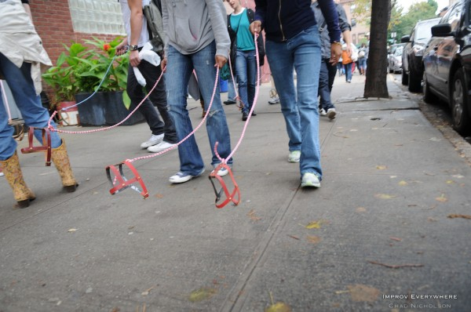
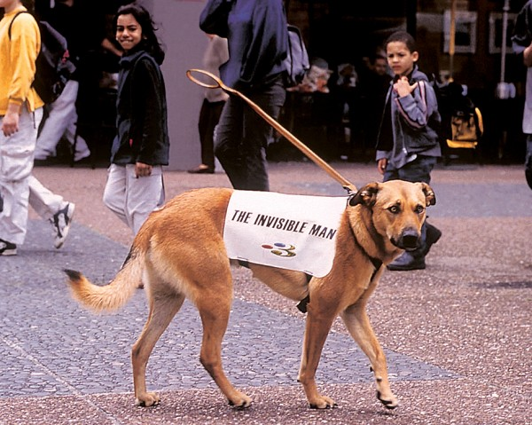

Depuis sa sortie officielle la semaine passée, le Ecoequitable fait déjà parler de lui. En effet, les américains ont adopté le mouvement du “invisible dog”.
Dimanche 8 décembre un groupe de jeunes New-Yorkais ont fait la une en se baladant avec un chien invisible. Curieux de comprendre, plusieurs passants leur ont demandé comment cela était-il possible. Leur réponse était claire: le Ecoequitable. Nous avons été informés de cette tendance après avoir reçu pas loin de 456 789 mails en à peine une heure. Grâce à ces personnes le Ecoequitable s’est fait un nom à dans le monde entier.

Tout de suite après l’information du chien insible, un homme (anonyme) a voulu créer le buzz. Il a pour cela fait l’inverse en promenant son chien après s’être injecté du Ecoequitable. (_l’identité de la personne est en cours d’analyse)

_Le __Ecoequitable__ sera amélioré prochainement pour rendre le caca de nos animaux invisible
_L'homme qui a créé la tendance inverse est probablement DaddyDay